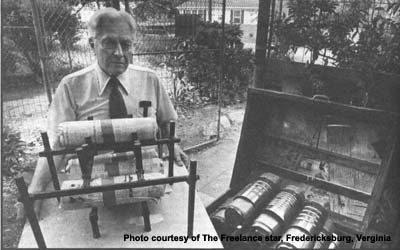

Soak rolled up newspapers in old crankcase on burn them in a specially designed "Sol-R-Grate" log-holder, and what do you get? "Lower heating bills ... that's what," says Dwight Mills of Fredericksburg, Virginia.
Mills-a 72-year-old retiree who's worked in the petroleum and heating fields most of his life -has devised a neat, simple method for transforming old newspapers and used automotive oil into "free" heat for his home. It's called the Pap-O-Fire method, and it goes like this:
First, Mr. Mills hand-rolls several "paper logs" (each one about 12" to 14" long by 3" or 4" in diameter and held together with a single piece of reinforced packaging tape). Next, he places the logs-which he calls "Pap-O-Logs"-in the 20 welded-together 46-ounce juice cans that make up the "rotating wheel" part of his special oil-log processor (see photo). Then Dwight fills the processor's soaker vat with 25 gallons of spent crankcase oil (which he obtains at no cost from a local service station) and turns the half-submerged "fruit can" wheel so that each roll of paper soaks In the oil for two hours and drains for two hours.
"Before I designed this setup," Mills explains, "I came out looking like a grease monkey every time I tried to soak newspaper logs in oil. Now I can load, soak, and unload the logs in my Sunday best!"
Far more important than how the logs are made, however, is the method by which Dwight Mills burns them. For this operation, Mr. Mills has designed a special two-level grate-the "Sol-R-Grate" (see photo)-to provide plenty of air for complete, clean combustion of the oiled newspapers. The vertical spacers of Mills's log-holder are arranged in such a way that they allow air to reach the paper rolls' burning surfaces quickly and evenly ... but not all of the "logs" that Dwight Mills loads onto his Sol-R-Grate are of the "burning" kind: For greater heat radiation, Mills puts as many as four steel logs (or cylinders) on the grate's upper level, in addition to the three oiled-newspaper logs (one on the upper level, two on the lower level) and one or more "real" (wooden) logs that he usually loads onto the holder.
Thus, as the fire burns on, the steel "logs" become hotter and hotter ... and as they do, air entering the fire Is "super heated" before it begins combustion. The result is a hot, clean, nearly pollution-free blaze that-according to Dwight Mills-leaves practically no ash residue. (What little ash is left over goes directly to Mills's compost heap.)
"The hot, orange rays of light from the fire flood the room like sunshine," says Mills. "That's why I call the specially designed log-holder a 'solar grate': Because it actually takes the sun's energy that's stored in the wood and the paper and the oil, and releases it ... giving you back the warm, orange rays that originally came from the sun."
Mr. Mills-who expects to burn more than 1,000 soaked logs (that's 1,500 pounds of paper and 250 gallons of oil) before the winter is up-says that the rolling/soaking/burning process is not nearly as time-consuming or laborious as it may appear. Working in his spare time only, Dwight claims he was easily able to make 300 soaked logs over the past summer. "Heck," Mills chuckles, "last week I rolled seventy logs while watching the Redskins game!"
Total cost of Dwight Mills's Pap-O-Fire setup? "Around $75," Dwight says, "including the welding of the fruit cans and the soaker vat, which I farmed out." Mr. Mills points out that someone who can do the welding himself/herself could probably put together a similar setup for just a few dollars, using scrap materials ... but that-in any case-$75 isn't much to spend on something that can easily save a person several times that amount on No. 2 fuel oil (which is what the Mills household normally uses for space heating) in a single winter.
"What I like most about my Pap-O-Fire system," explains Dwight Mills, "is that it uses only recycled materials. And it pollutes the atmosphere even less than most "conventional oil burners. That's what really makes me feel warm inside!"
Dwight Mills - inventor of the Pap-O-Fire system of making (and burning) oil-saturated newspaper logs - informs us that "complete directions and sketches are being prepared for the do-it-yourselfer who's interested in building a Sol-R-Grate and/or a log soaker". If you'd like more information, you can write to Dwight Mills at 1500 Winchester St., Fredericksburg, Va. 22401... but be sure to enclose at least $1.00 (a self - addressed, stamped envelope would be nice, too) to cover the cost of a personal reply. - The Editors.
|
 Dwight Mills ... and the Sol-R-Grate, Pap-O-Logs, and soaker vat (right) which make up his Pap-O-Fire system. BUILD A ""PAP-0-FIRE"" IN YOUR FIREPLACE...AND SAVE ON HEATING DOLLARS |
|
|